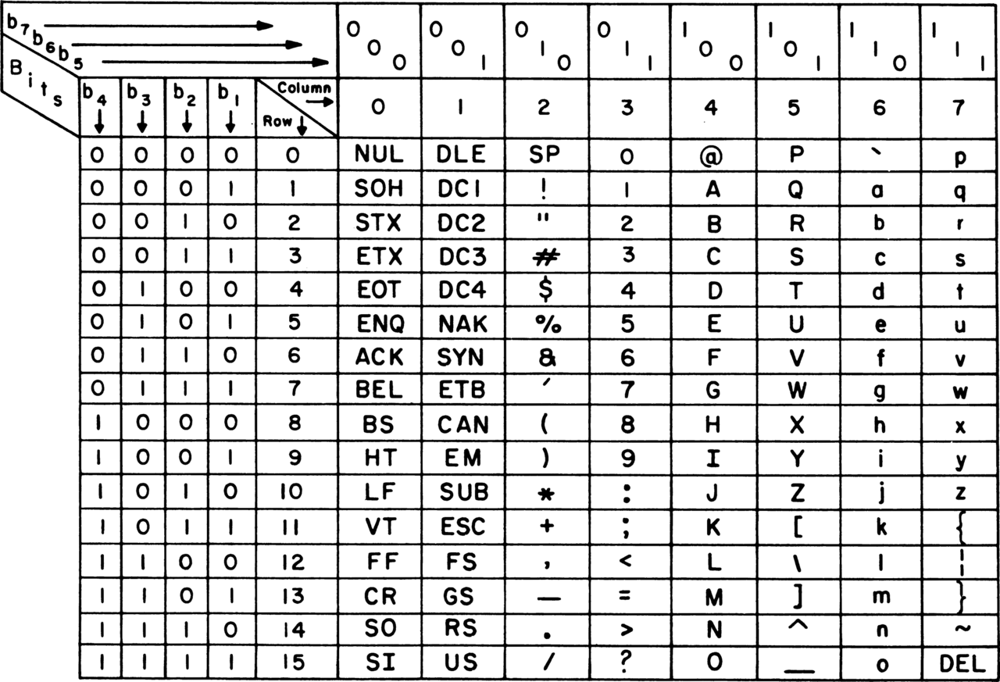

Text
Da wir typischerweise Sprache/Schrift, mit ihren verschiedenen Buchstaben und Zeichen, benutzen um Sachverhalte darzustellen ist es nötig, dass Computer diese speichern und mit ihnen arbeiten können. Computer arbeiten jedoch nur mit wahr/falsch bzw. Zahlen, weshalb es hierfür notwendig ist Codes zu haben.ASCII
ASCII (American Standard Code for Information Interchange) gilt als die Grundlage für die meisten Textcodierungen.Er weist den 7-bit langen Zahlen, also 27 = 128 Werten, Zeichen, die im amerikanischen Raum verwendet wurden zu. Dies sind Groß- und Kleinbuchstaben, Satzzeichen, sowie einfache Sonderzeichen und Steuerungscodes, die zur Koordination des Datenverkehrs verwendet wurden bzw. verwendet werden können.
Überblick:

ASCII Tabelle: links die rechten vier Bit; oben die linken drei
Die Werte für 0-31, sowie 127, sind Steuerungscodes.
Wie man jedoch sieht fehlen bereits für die deutsche Sprache Buchstaben, wie Ä, ä und ß.
Erweiterung
Weil das klassische ASCII nur 7 der 8 Bit in einem Byte nutzt wurden verschiedene Erweiterungen eingeführt, um weitere im normalen ASCII fehlenden Zeichen darstellen zu können. Hierbei wurden jedoch so unterschiedliche Variationen erschaffen, dass es keine allgemeine ASCII-Erweiterung gibt.Unicode
Um das Problem der fehlenden Zeichen zu beheben entstand der Unicode-Standard. Das Ziel hierbei ist es möglichst alle Zeichen, was neben Buchstaben, Schriftzeichen und Sonderzeichen auch Symbole, wie Emojis beinhaltet. Die Zeichen wurden Zahlenwerten zugewiesen, sodass man mit den Zahlenwerten diese repräsentieren kann.Standardmäßig gibt man die Codes der Zeichen hexadezimal, mit einer Mindestlänge von 4 Ziffern, an. Um zu makieren, dass es sich um ein Unicodesymbol handelt, wird der Präfix "U+" verwendet.
U+00DF entspricht "ß".
Die ersten 128 Zeichen sind denen aus ASCII gleich. Dannach wurden einfach die Zeichen chronologisch angehängt.
Unicode bestand in seiner ersten Version aus etwa 7.000 Zeichen aus 24 Schriftsystemen. Inzwischen ist dies auf knapp 150.000 Zeichen aus über 160 Schriftsystemen angewachsen.
Unicode selbst bietet jedoch keine direkte Codierung an, weshalb es hierfür in anderen Systemen implementiert wurde.
UTF
Das UTF (Unicode Transformation Format) implementiert die Darstellung von Unicode Zeichen für den Computer in Bytes.Es gibt hierbei drei verschiedene bekannte Formate:
- UTF-8
- UTF-16
- UTF-32
UTF-32
Im UTF-32 könnten auf den 4 Byte 232 = 4.294.967.296 Zeichen darstellen, während es in Unicode nur etwa 160.000 Zeichen gibt, sodass in dieser Darstellung einfach die Unicodewerte der Zeichen gespeichert werden können. Da jedoch immer auf 4 Byte aufgefüllt werden muss, wird gegenüber UTF-16 häufig fast das doppelte an Speicher benötigt.UTF-16
UFT-16 erlaubt es 2 oder 4 Byte für ein Zeichen zu verwenden.Werden 2 Byte verwendet, so wird einfach der Unicodewert des Zeichens in diesen zwei Byte gespeichert.
Genügen diese 2 Byte nicht, so werden 4 Byte verwendet. Der Unicodewert wird hierbei auf 20 Bit (220 = 1.048.576 > 160.000) aufgeteilt, wovon 10 in den ersten 2 Byte und 10 in den zweiten 2 Byte gespeichert werden. Um die Zusammengehörigkeit zu signalisieren wird den 10 Bit des ersten Byte 110110 und vor den 10 Bit des Zweiten 110111 gespeichert.
Der Notenschlüssel 𝄞 Unicode: U+1D11E wird also als
110110
00 01010011
110111
11 01011100
dargestellt.
Blau: Start-/Endmarkierung; Gelb: erste 10 Bit; Grün: zweite 10 Bit
UTF-8
UTF ermöglicht es noch dynamischere Längen von 1, 2, 3 oder 4 Byte zu verwenden.Ein ASCII-Symbol wird einfach in einem Byte gespeichert. Die 0, mit der jedes ASCII-Byte beginnt, gibt an, dass der Block für das Zeichen nur ein Byte lang ist.
Handelt es sich nicht um ein ASCII-Symbol, werden mehrere Byte benötigt. Das erste Byte beginnt hierbei mit 11, um den Anfang des Blocks zu signalisieren. Die folgenden Bytes beginnen mit 10. Der Präfix des ersten Bytes erstreckt sich jedoch über die ersten zwei Bit. Denn es werden so viele Einsen verwenden, wie der Speicherblock lang ist, gefolgt von einer 0.
| Länge in Byte | 1. Byte | 2. Byte | 3. Byte | 4. Byte |
|---|---|---|---|---|
| 1 | - | - | - | 0xxx xxxx |
| 2 | - | - | 110x xxxx | 10xx xxxx |
| 3 | - | 1110 xxxx | 10xx xxxx | 10xx xxxx |
| 2 | 1111 0xxx | 10xx xxxx | 10xx xxxx | 10xx xxxx |
x: Bits für die Speicherung des Unicodes; 1/0 feste Bits
Da bei UTF-8 die Länge dynamisch ist, ist dies meist der effinzienteste Code und wid daher auch am häufigsten zur Textspeicherung verwendet.
~ Tobias